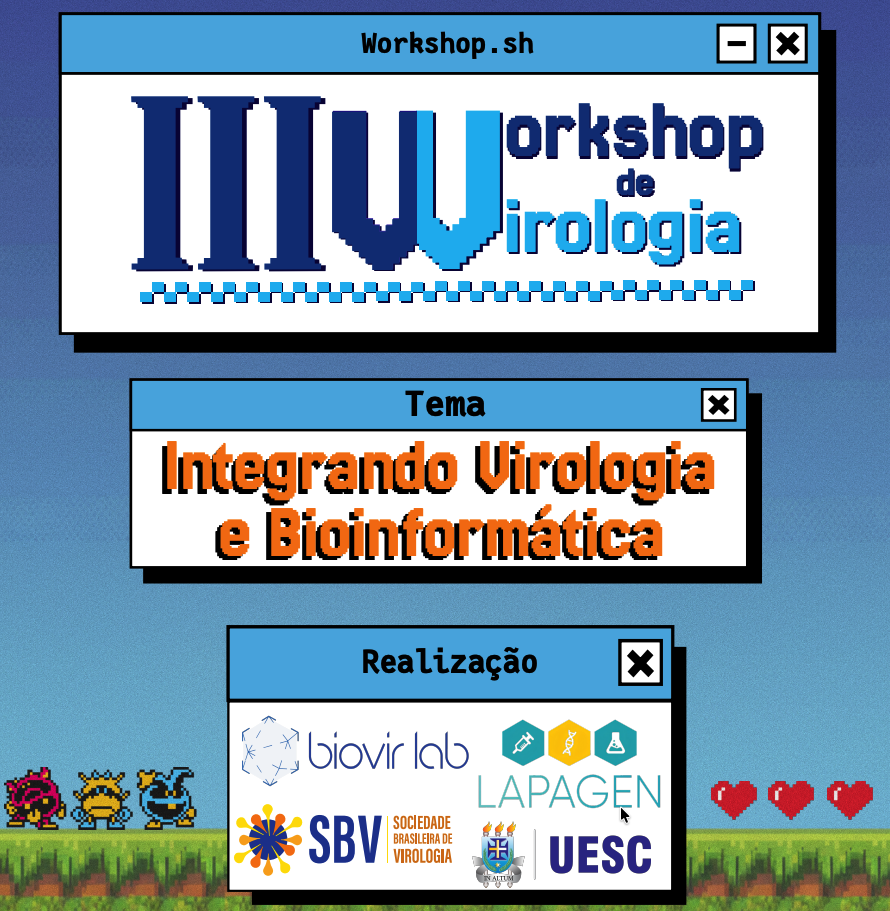

<!-- gerado por scripts/build-eventos.py a partir de eventos/ - nao editar a mao -->
<h2 class="event-group-title">Past</h2>
<div class="event-list"><a class="event-item event-link no-external" href="events/3_workshop_virologia/index.html"><span class="event-date">25–26 Mar 2026</span><span class="event-body"><span class="event-title">III Virology Workshop</span><span class="event-desc">Ilhéus, Brazil — Third Virology Workshop at UESC, organised by the Virus Bioinformatics (BioVirLab) and Applied Pathology and Genetics (LAPAGEN) laboratories, with support from the Brazilian Society of Virology (SBV).</span></span><span class="event-thumb"></span></a></div>
